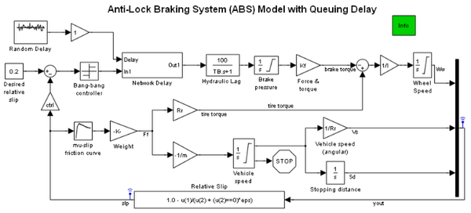
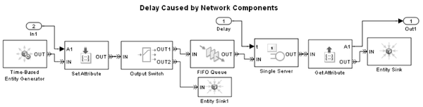

Anti-Lock Braking System (ABS) Model with Queuing Delay
Contents
Overview
This model is similar to the time-based Anti-Lock Braking System (ABS) Model, except that simple queuing components introduce timing uncertainty into the braking system of this model. The queuing components, which are in the Delay subsystem, delay the update of signals from the controller to the Hydraulic Lag block.
Behavior of the Delay Subsystem
To see the implementation of the delay, open the Delay subsystem by double-clicking it.
The subsystem attaches data from the controller to entities that move from block to block in the subsystem. If an entity reaches the Get Attribute block in the subsystem, the Hydraulic Lag block at the top level of the model can access the data attached to the entity. By the time the Hydraulic Lag block accesses the data, the data is delayed due to these cumulative effects:
- Entities arriving at the Single Server block wait there for a random amount of time.
- If the Time-Based Entity Generator creates an entity while the server is busy and the queue is not full, the entity waits for an undetermined amount of time in the FIFO Queue block.
However, if the queue is full when the entity attempts to arrive, the Output Switch block discards the entity. As a result, the subsystem does not update the signal connected to the Hydraulic Lag block with this data value.
The subsystem is similar to the one described in Adding Event-Based Behavior
Experimenting with the Model
(For use with live model only)
You can vary the delay behavior by making one or more of these changes:
- Scale the duration of the delay by changing the Gain parameter in the Gain block next to the Delay subsystem. A value of 0 eliminates the delay.
- Vary the distribution of the service time by changing parameters in the Random Delay block.
- Vary the Delay subsystem's buffering capacity by changing the Capacity parameter in the FIFO Queue block to zero or a positive integer. A larger capacity increases the latency of successfully delayed data. However, a larger capacity also reduces the number of data values that the system drops when the server and queue are full.